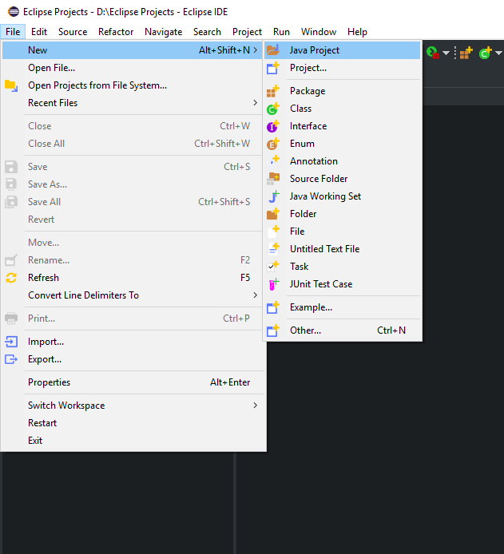
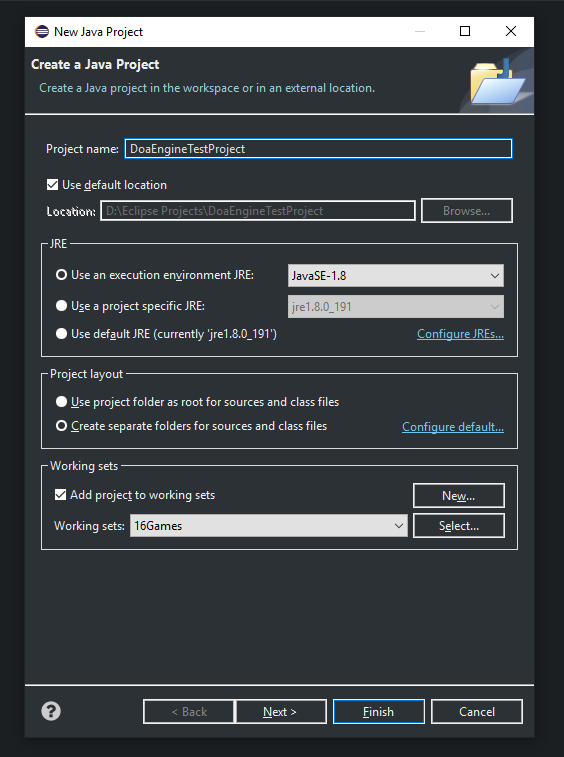
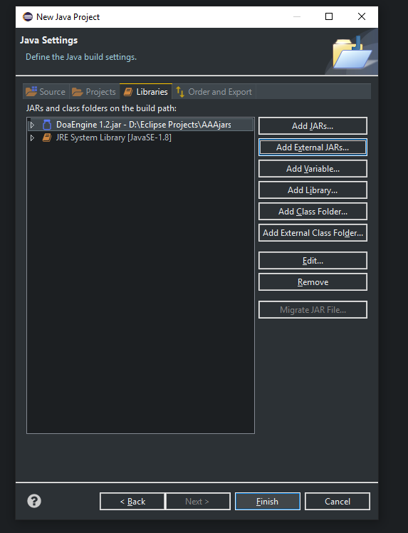
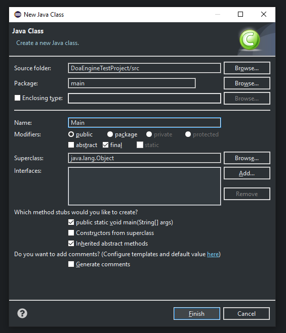
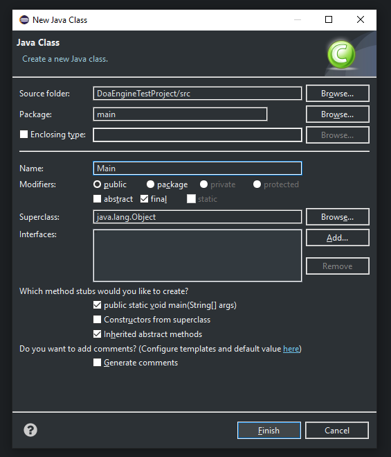
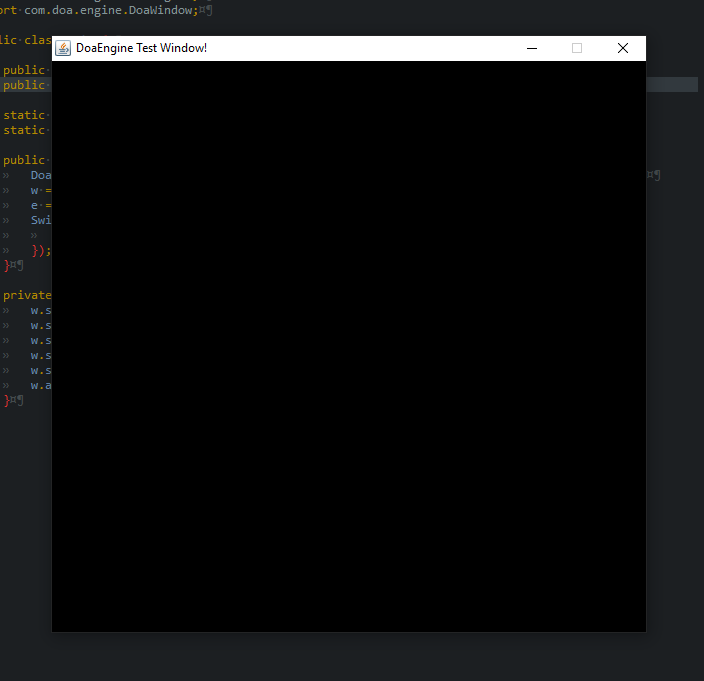
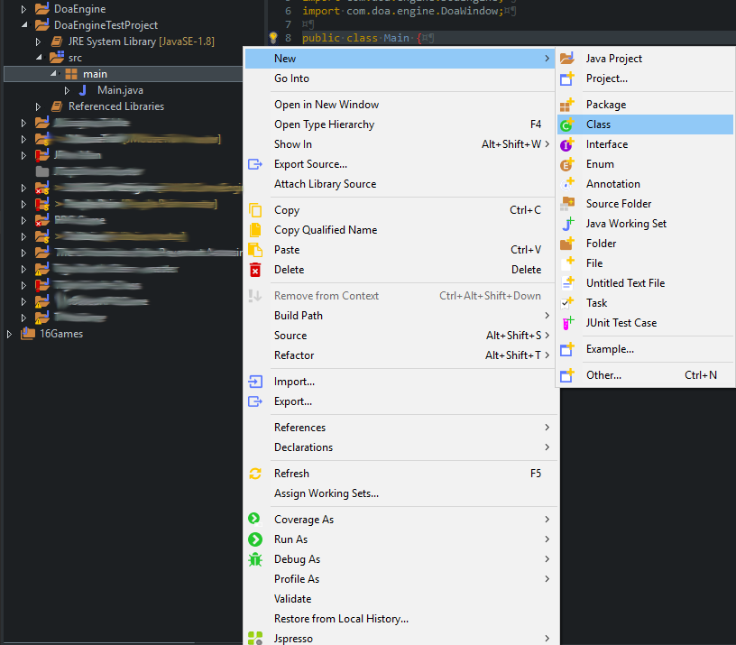
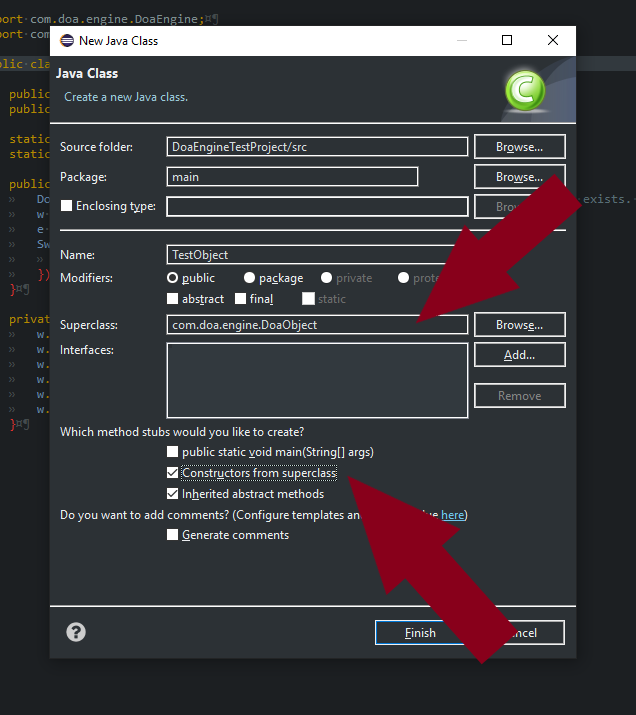

This page will cover how to set up and use DoaEngine for your projects. The IDE used in this page is Eclipse IDE Version: 2018-09 (4.9.0) Build id: 20180917-1800, but setting it up and using with other IDE's should be more or less the same.
Go to File -> New -> Java Project. Then give your new project a name.
Click Next then Libraries From here click Add External JARs... and navigate to your DoaEngine's JAR file and select it. Then click Finish.
After creating and linking your project to DoaEngine, go ahead and create your Main function.
 

After creating the Main function. Paste this small code segment to your Main function and hit the run key.
public static final int WINDOW_WIDTH = 600;
public static final int WINDOW_HEIGHT = 600;
static DoaWindow w;
static DoaEngine e;
public static void main(final String[] args) {
/* Not required, put here to demonstrate this this exists. */
DoaEngine.TICK_RATE = 240;
/* Create the window of the application */
w = DoaWindow.createWindow();
/* Instantiate DoaEngine */
e = new DoaEngine();
/* Configure Application Window */
SwingUtilities.invokeLater(() -> {
configureGUI();
});
}
private static void configureGUI() {
/* Title of the window */
w.setTitle("DoaEngine Test Window!");
/* Size of the window */
w.setSize(WINDOW_WIDTH, WINDOW_HEIGHT);
/* Location of the window */
w.setLocation(100, 60);
w.setResizable(false);
/* Make window visible */
w.setVisible(true);
/* Add DoaEngine to our window. Engine starts automatically
when it is added, and stops automatically when it is removed.*/
w.add(e);
}The result should look like this.
In order to create and place objects to the scene, we need to subclass DoaObject class. Go ahead and create a new class and extend DoaObject.
After creating the class, you will be greeted with a bunch of constructors that allow you to instantiate your object,
and 3 overriden methods. These methods are:
Now let's go to our main function and instantiate an instance of the new object we just created. To do this copy and paste
the code below to your main function right after the line that instantiates DoaEngine and hit the run key.
new DoaObjectBuilder(TestObject.class).args(200f, 200f).instantiate();Let's go and write a small piece of code that will move our object to the right. Copy and paste the code below to the tick(void) method. Then hit the run button.
position.x += 0.1f;Now, we see nothing changing on the screen. Because, we still haven't rendered our object to the screen.
g.setColor(Color.RED);
g.fillRect(position.x, position.y, 20, 20);